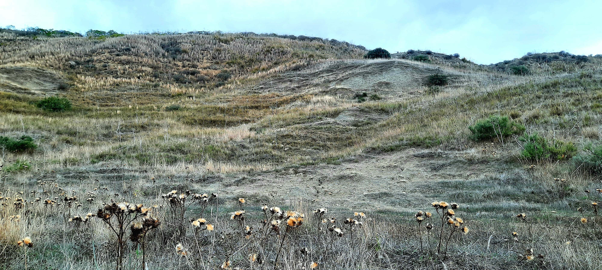

Formazione Castellana

ITALIANO - Sezione tipo, in località Segnaferi, in cui affiorano sabbie e argille siltose grigio‐verdastre con intercalazioni ciottolose di matrice quarzarenitica. Questi sedimenti caratterizzano la messa in posto della Falda Sicilide delimitando la deposizione dei discordanti Terreni Tardorogeni. (Serravalliano sup. – Tortoniano inf.)
ENGLISH - Type section, in the locality of Segnaferi, in which sands and greenish grey clays with pebbly intercalations of quarzarenitic matrix emerge. These sediments characterize the implementation of the Sicilide Aquifer delimiting the deposition of the discordant Terreni Tardorogeni. (Serravalliano sup.- Tortoniano inf.)